1. For my Passion project i've created my own version of Pac-man using html and javascript 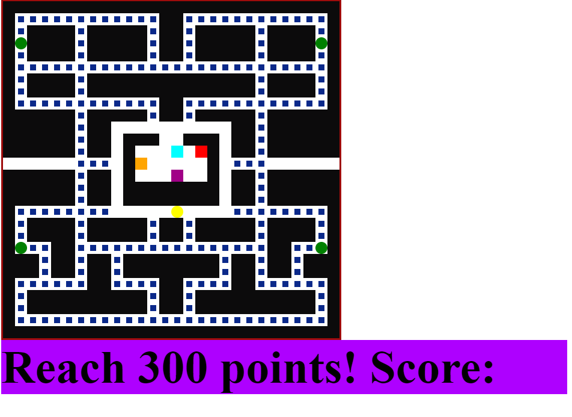
2. Layout for grid. 0 for PAcdots, 1 for walls, 2 for ghost box, 3 for power up, 4 for empty 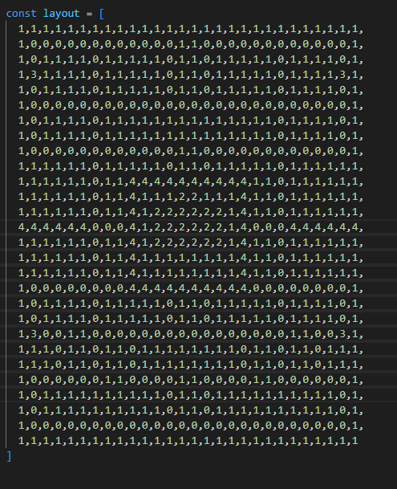
3. Draw grid and render it 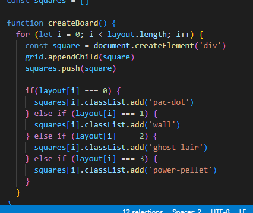
4. I also put pacman had to place pacman on the appropiate index 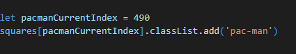
5. Created the code to so pacman would be able to move up and down the index with the arrow keys 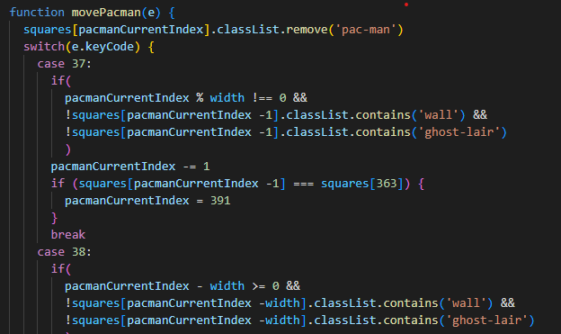
6. Created class for ghost index and speed 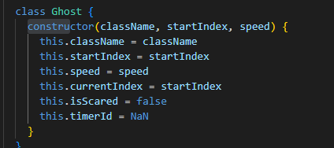
7. Style for ghost 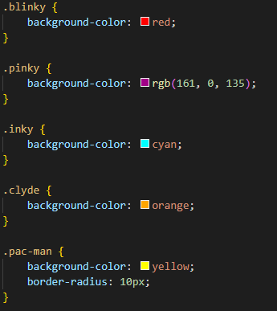
8.Style for pacman 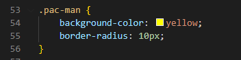
9. Style for dots 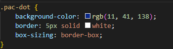
10. Created the ghost 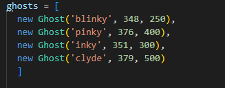
11. Added function for the dots to be eaten 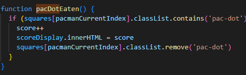
12. USed if to keep pacman out of the box where the ghost are 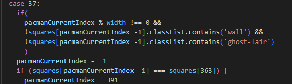